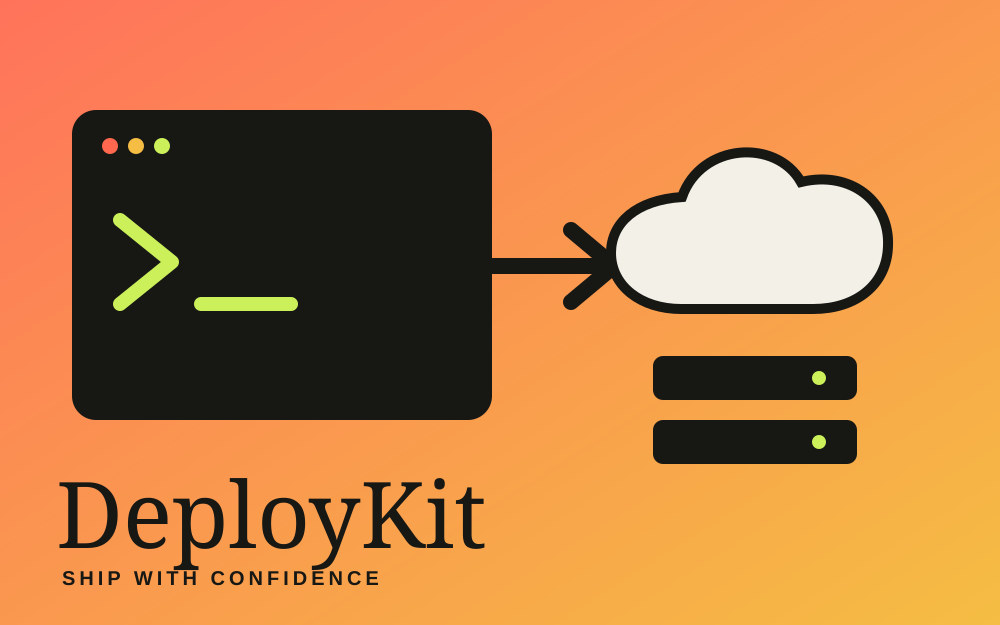

De necesidad interna a herramienta adaptable
Desarrollé el proyecto en solitario a partir del despliegue de una aplicación para una empresa. Separé la lógica específica y amplié la configuración para aplicarla a otros proyectos multi-tenant.

DevOps · Automatización
Creé DeployKit a partir de una necesidad de trabajo y lo convertí en una herramienta modular. Gestiona despliegues independientes de frontend y backend por tenant sobre infraestructura AWS existente.
Ver repositorio ↗Desarrollé el proyecto en solitario a partir del despliegue de una aplicación para una empresa. Separé la lógica específica y amplié la configuración para aplicarla a otros proyectos multi-tenant.
Cada referencia se fija a un commit. El backend usa AWS SSM para evitar accesos SSH directos, guarda versiones inmutables, comprueba la salud del servicio y permite rollback. El historial y los bloqueos evitan despliegues simultáneos sobre la misma aplicación.
Elegí una CLI para facilitar la automatización y el uso desde agentes de IA. El dashboard web usa la misma lógica de orquestación. Un entorno Docker permite probar el flujo sin acceso a AWS.